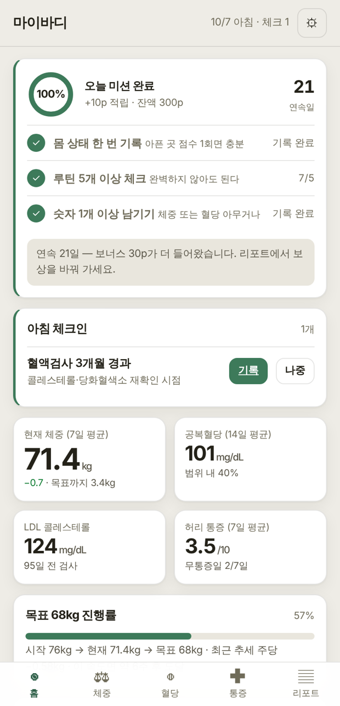
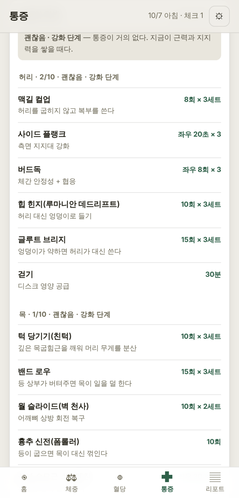
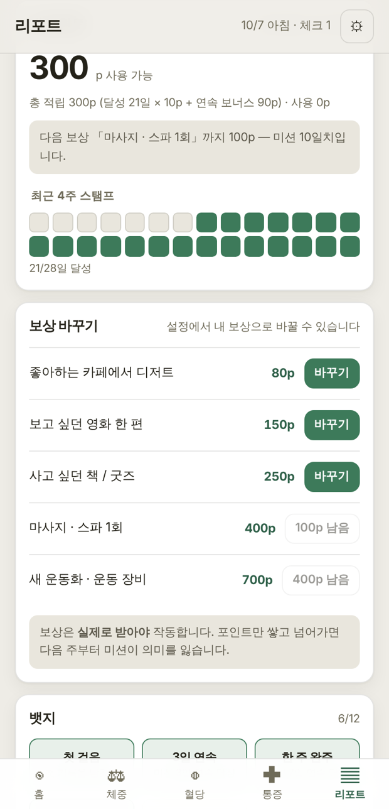

개인용 건강 기록 PWA
오늘 뭘 해야 하는지만 묻고, 통증 점수에 맞춰 운동 강도를 자동으로 바꿉니다. 기록은 내 폰 안에만 남습니다.
설치 불필요 · 가입 없음 · 무료
체중은 체중계 앱, 혈당은 혈당계 앱, 목·허리는 아무 데도 없습니다. 세 가지가 서로 어떻게 엮이는지 보여주는 화면이 없으니, 숫자는 쌓이는데 행동은 안 바뀝니다.
01
아침·낮·저녁에, 아직 답하지 않은 것만 2~4개 띄웁니다. 전부 묻지 않습니다.
02
점수가 오르는 중이면 운동 강도를 자동으로 한 단계 낮춥니다.
03
미션을 채우면 포인트가 쌓이고, 내가 직접 정한 실제 보상과 바꿉니다.
입력
점수 한 번 입력
아픈 곳을 0~10 슬라이더로 한 번.
판정
4단계로 판정
최근 추세가 나쁘면 한 단계 보수적으로.
결과
오늘 할 운동
횟수와 이유, 오늘 피할 것까지 같이.
아래는 예시 데이터를 넣고 실제 앱에서 찍은 화면입니다. 코드는 전부 공개돼 있습니다.



출처: github.com/mio-modu/mybody_management — 화면을 만든 코드 그대로입니다.
안 됩니다. 기록은 이 브라우저 안에만 저장됩니다. 기기를 옮기려면 설정에서 JSON으로 내보내 새 기기에서 가져오세요.
안 옵니다. 서버가 없어서 앱이 열려 있을 때만 뜹니다. 폰 기본 알람을 체크인 시각에 맞춰 두는 쪽을 권합니다.
아닙니다. 기록·관리 도구입니다. 팔다리 저림이나 힘빠짐 같은 신호를 체크하면 운동 대신 진료를 먼저 안내합니다.
됩니다. 프로필을 추가하면 한 기기에서 여러 명이 각자 씁니다. 목표·기록·포인트가 완전히 따로 갑니다.
아무도 못 봅니다. 서버로 전송하는 코드 자체가 없습니다. 소스가 공개돼 있어 직접 확인할 수 있습니다.